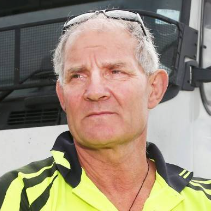

Scutaru Magdalena is a retired women that is close to her grand-childs and also she is very open to learn new things and technology to keep up with the current generation.
The grand-childs are the teachers for her , they always show her new applications that could help her .She wants to live a long and qaulitative life so she is verry carreful and strict when it comes to allimantion and also want the best quality
for any product she buys.She learned from her grandsons about the BEGR app and how to use it.
Scenarios
Magdalena have a good relationship with the people in neighborhood.Whenever someone find a new product , a good product or even an interesting sales on the app they recommended it to the rest. MAgdalena check her app requlary to keep up
with the neighbours newest purchases.
Magdalena get out of potatoes . She opens the app , scan the product using AI detection and check the best results and their review before proceeding to shopping.
Type: Primary
Name: PescaruBianca
Background
Date of Birth:
Gender:Female
Location:Iasi, Romania
Work place: Faculty of Philosophy,Student
Technology Level:Above Average
Main Points
Extremely busy schedule due to being in univerisity
Cares about health and nutrition
Tech literate
Up to date with the latest technology
Has a group of friends with a similar interest in technology
Goals
Find healthy and nutritious food items
Spend less time aimlessly searching in supermarkets
Easily exchange information about products with her friends to save each other's time
Take advantage of technology to improve her quality of life
Frustrations and Pain Points
Planning for a shopping trip takes too much time
Hearing about a better option in another shop after already purchasing the desired items
Recommending items is not convenient enough
Detailed Description
Pescaru Bianca is a 22 years old Student at the Faculty of Philosophy, that lives in Iasi, Romania.
She spends most of her days studying for university exams, researching and preparing healthy meals, or
learning about the newest technology with her group of friends.
Due to being so busy with university, she wants to save time and optimize every activity, and when it comes to
shopping, this goal can be achieved by using our app to eliminate the process of searching for specific products in stores,
and making it much easier to share and receive item recommandations from friends and family.
Because she's tech literate, it's really easy for her to use this application.
Scenarios
Bianca goes to the store to do some shopping. Arriving inside the store, she pulls out her phone and starts scanning product codes.
In the application, she receives a series of products, similar to the scanned ones, but will filter them, based on some properties, according to her needs.
After selecting these properties, the aplication will suggest the best products based on her choices. After she selects the ones to buy,
the application will locate where the products and can guide her to their locations if needed.
Bianca wants to tell a friend about a new food product she found and the details about it (where to find it, how much it costs, etc.).
Instead of exchanging long messages, trying to remember all of the information and taking pictures of the packaging, she opens the app,
searches for the product she bought and clicks the share button to send it directly to her friend.
Type: Secondary
Name: Mateo-RaresGrozaveanu
Background
Date of Birth:
Gender:Male
Location:Brasov, Romania
Work place:FUERDA SMARTECH, Economist
Technology Level: Medium
Main Points
He is a person who travels quite a lot.
He wants to be aware of most things in the area where he goes.
He uses the phone regularly to make his work easier.
Goals
He wants to have access to the best products to have a healthier life.
He wants to have as much free time as possible to spend with his family.
When he is away, he wants to visit all kinds of places, not hang around the shops looking for what he needs.
Frustrations and Pain Points
He uses the applications of some stores but always finds the products at better prices in other stores.
When he is away, he always spends a lot of money on nothing.
Detailed Description
Mateo, 29 years old, is an economist at Fuerda Smartech and from time to time he is on the road.
This company has branches in other countries and there are times when they need a good economist.
At home, Mateo knows where to buy the best products, but when he is away, he doesn't know as much anymore and loses a lot of money because
he doesn't know where the best prices are.
He likes to lead a life as healthy as possible so that there are no unpleasant moments in his life.
On trips, he also takes his wife so that in her free time she can visit as many locations as possible.
He is a person who loves his family and would do anything to spend as much time as possible with his dear wife.
Mateo is the kind of person who adapts quickly and wants to learn as many things as possible to make everyday life easier.
Besides his job, his hobby is cooking, trying to give as much interest as possible to make his food better and better.
Scenarios
Mateo was assigned to go on a small trip to Spain to help the company on the economic side.
Arriving there with his wife, they realized that they had to eat something.
Instead of going to all the stores as usual, they learned from a friend that there is an application that shows you the best products
according to certain criteria. They said to try it. After 10 minutes they knew where they had to go to buy food for the following days.
The application helped them find the desired products at a great price at a nearby store.
They did the shopping and the rest of the day they could go for walks to visit the new location.
In the evening when they got home Mateo realized that he didn't have all the ingredients to make his favorite food so he used the app again to
see if the necessary ingredients were nearby.
Type: Negative

Name: MariusNeculcea
Background
Date of Birth:
Gender:Male
Location: Timisoara,Romania
Work place: Ravitex, Truck driver
Technology Level:Low
Main Points
He works a lot at night and doesn't rest enough
Low level of technology
he uses his free time to sleep and to talk with close relatives.
Goals
He wants to finish work as soon as possible in order to rest
He wants to lead a life as simple as possible
Frustrations and Pain Points
He is a rigid person who does not want to be up to date with technology.
He thinks that modern phones are made to control us (he has an old flip phone)
He believes that the applications will control people and will know all the data about them
Detailed Description
Marius is a 61-year-old truck driver who works at Ravitex Timisoara to support his family.
He is the kind of person who was taught hard work from an early age, so now it is hard for him to believe that things can be simpler.
Throughout his life, he kept his distance from technology because of his fear of it.
He believes that at some point we will all be controlled like sheep with the help of technology.
He uses an old flip phone considering that it is much safer this way.
He spends most of his free time sleeping, and when he's not sleeping he watches Romania TV to find out the latest news from around the country.
He is not the type of person to be open to new things, as it is very difficult for him to learn new things.
He wants to have a life as simple as possible without having to worry about using a phone to make his job easier.
Scenarios
During breaks from work, Marius sees his colleague using his smartphone quite a lot to discover new offers on the food he buys.
To make his life easier, his colleague suggests to Marius to buy a new phone (with touchscreen) that he will use to discover new products at all kinds of offers.
But Marius refuses this idea, always saying that his colleague keeps his eyes only on the phone and has no other life apart from the phone.
He prefers to go directly to the store and buy the things he needs. He will never need a phone to tell him what to do.
It seems too much for him to use the phone so much for something so trivial.